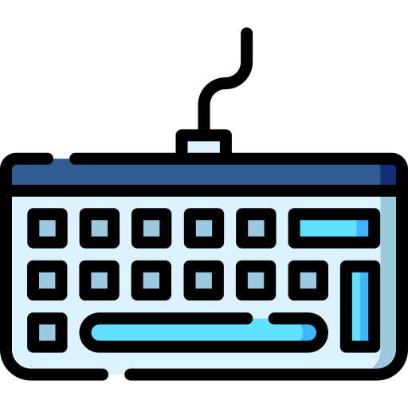

SYSTEM READY
CAREGIVER ID: 9527
⚙️
NEEDS
Water / Food
CHAT AI
Smart Talk
BODY
Comfort
MEDIA
Watch TV

KEYBOARD
Type
SYSTEM ONLINE
EYE TRACKER
CATEGORY
SELECT OPTION
✅
SENT TO CAREGIVER
⚠️ PREPARING SOS ⚠️
OPEN EYES NOW TO TRIGGER
🚨 SOS SENT 🚨
NOTIFYING EMERGENCY CONTACTS...
System Standby... Long Blink to Wake